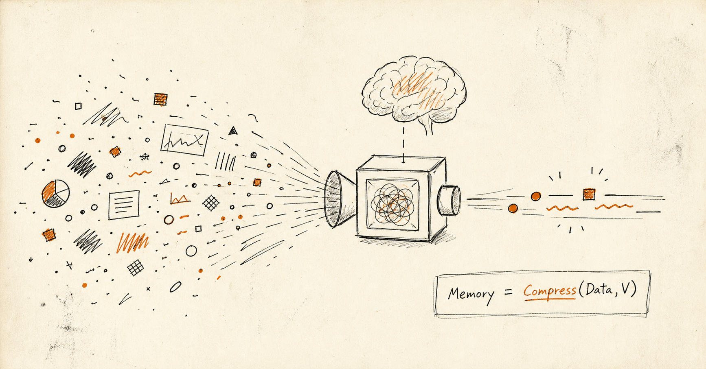

0. 問題意識
一般に「記憶」「要約」「データドリブン」「客観」は、情報を中立的に扱っているように語られる。
しかし実際には、情報はそのまま保存されるのではなく、何を残し何を捨てるかの選択を必ず含む。
この選択関数はしばしば隠蔽され、「客観」という言葉で表現される。
本稿の主張は、次の一文にまとめられる。
記憶とはデータ保存ではなく、主体関数による意味圧縮である。
1. 現実とデータは同じではない
現実を R とする。
観測・測定・ラベル化を M とする。
取得データを D とする。
すると、次のように書ける。
データは現実そのものではない。
データは現実を、ある観測系・設計思想を通して射影した結果である。
観測系には必ず以下が埋め込まれる。
- 何を測るか
- 何を捨てるか
- どの粒度で見るか
- 何を目的にするか
2. 圧縮には価値関数が必要
無圧縮なら全て保持できる。
圧縮は必ず：
何を残すか
を決定しなければならない。
よって：
は不完全であり、
実際には：
である。
ここで V は、何を残すべきかを決める基準である。
文章要約なら、どの情報を重要とみなすか。
JPG なら、どの画質劣化を許容するか。
MP3 なら、どの音の差異を捨ててよいとみなすか。
同じデータでも、この基準が変われば圧縮結果は変わる。
だから圧縮は、単に小さくする処理ではない。
何を失ってよいかを決める処理である。
3. 記憶とは主体による意味圧縮である
記憶は録画ではない。
記憶は、次のように表せる。
つまり、記憶とは次のようなものだ。
記憶は、主体にとって意味のある差異のみを保存する。
同じ100万トークンでも：
主体A：
「あの日初めて歌った」
主体B：
「その日の売上」
主体C：
「危険だった場所」
残るものは異なる。
4. 意味とは何か
意味とは：
主体にとって保存すべき差異
である。
つまり、次のように書ける。
データ量は意味量ではない。
極端には：
100万トークンのログを
「全部不要」
とラベル付けできるなら、
ゼロ圧縮でも意味損失は発生しない。
5. 客観の欺瞞性
客観の問題は主観が存在することではない。
問題は：
主観関数が隠れること
である。
本来は、次のような形をしている。
ここで S は主体、あるいは主体の状態である。
しかし、しばしば提示されるのは y だけである。
「データがそう言っている」
「客観的にそうである」
と表現される。
隠れているもの：
- 観測方法
- 損失関数
- 選択基準
- 目的関数
- 主体状態
6. 客観の再定義
では、客観とは何か。
客観とは：
主観を消したもの
ではない。
むしろ：
複数主体の安定した重なり
である。
客観は主観の否定ではなく、安定点である。
7. 美について
ここまで V を、圧縮の基準として見てきた。
これを広く見るなら、生存、好み、美、興味、目標、感情、行動方針も含まれる。
美とは：
主体が保存したいと感じる差異
である。
あるいは、次のように表せる。
この定義では、
- 芸術作品
- 数学の証明
- 生存戦略
- 行動選択
は連続的に扱える。
記憶とは：
美を保存する圧縮過程
とも言える。
終わりに
情報圧縮の問題は、
どれだけ削るか
ではない。
本質は：
誰にとって何を残すか
である。
そして最も危険なのは、主体が存在することではない。
主体が見えなくなること
である。